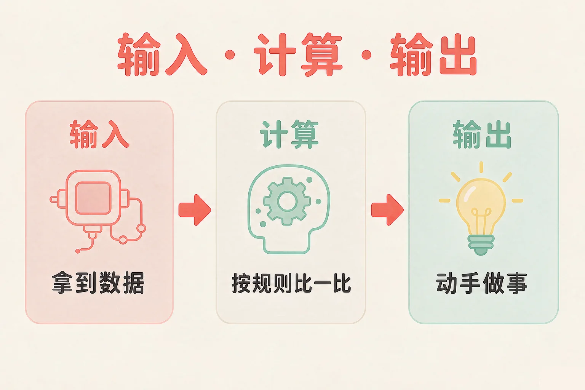
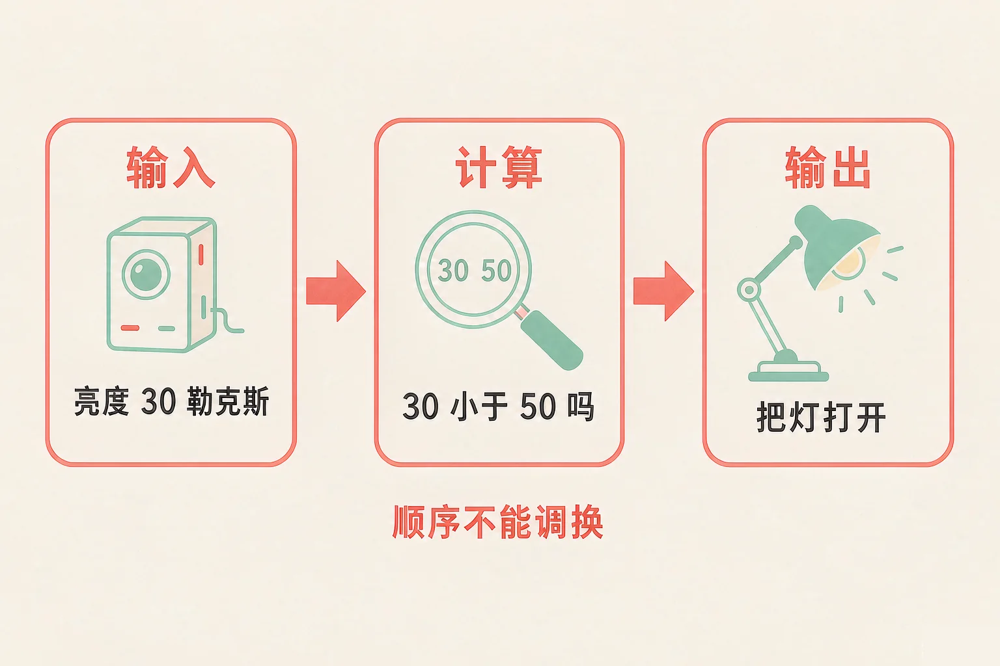
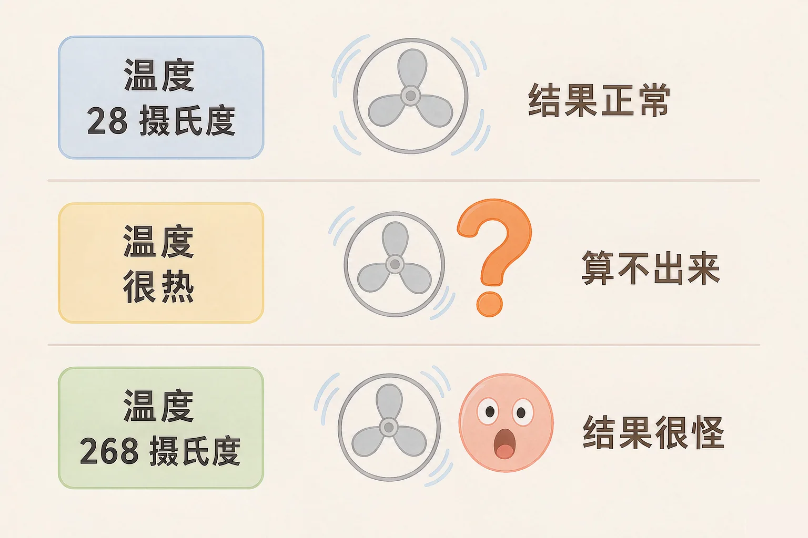

Gallery
v1.0.0 · skill v7.22.0
小学五年级 · 过程与控制
教室的灯，天一黑就自己亮了——它到底是怎么知道的？

选一个你真正好奇的问题，后面的动手活动都会围着它转。
选择或输入后，这节课会围绕你的问题展开。
先凭直觉选一个，选完立刻看到解释——错了也没关系，正好知道要重点听哪里。
1. 教室的灯，天一黑就自己亮了。它真的是「看见」天黑了吗？
灯不会看，也不会猜。它靠的是一根光线传感器，把「有多亮」变成一个能比较的数值。错因提醒：常见错误是把传感器当成「眼睛」。它更像一只把光变成数字的手，真正做决定的是后面的计算。
2. 下面哪一样，是智能台灯的「输入」？
送进去给机器处理的数据，才是输入；灯亮起来是它最后做出来的事，那是输出。错因提醒：最容易搞混的就是「输入的」和「输出的」——记住方向：从外面送进来的叫输入，从装置做出去的叫输出。
3. 风扇在温度超过 26 ℃ 时自动转起来。它要先做什么？
顺序是：先有输入，才有计算，最后才有输出。没有数据，机器什么也算不出来。错因提醒：不少同学误认为机器会「先动手再说」，其实它每一步都要等上一步的结果。
为什么要学这一课？
我们平时做事凭感觉就够了（And）；可像自动感应灯这种装置，它没有眼睛也没有想法，只会一件事一件事地做（But）；所以我们得把它做的事拆成看得清的三步——输入、计算、输出，才能看懂它，也才能自己动手做一个（Therefore）。
不管是自动感应灯、电饭煲还是智能台灯，抽象地看，它们做的事都只有三步。
① 输入
先拿到要处理的数据：光线多亮、温度多少、按钮有没有被按下。
② 计算
按一条写好的规则，把这些数据比一比、算一算。
③ 输出
照着算出来的结果动手做事：开灯、开门、报警。

举个例子：自动感应门
输入——门边的传感器送来一个信号：这个范围内有没有人 → 计算——照规则比一比：检测到人了吗 → 输出——有人就把门打开，没人就把门关上。
🔍 深层理解 换个角度再看一遍这件事，看看能不能说出背后的原理。
看见它：身边每一个「会自己做事」的装置，都能拆出这三格：路灯、扫地机、自动晾衣架，一个都不例外。
解释它：为什么顺序不能调换？因为没有输入就没有数据可算，没算完就不知道输出什么——每一步都得等上一步。
迁移它：你自己做事也是这三步：先看清情况（输入），再想一想（计算），最后动手（输出）。差别只在于人会变通，机器不会。
给机器一个输入，再给它一条规则，然后点「执行」。三格会一个个亮起来，看数据怎样从左边走到右边。
① 输入
—
② 计算
—
③ 输出
—
请先选一个输入，再选一条规则。
「计算」这一格里，机器看不出任何聪明。它只做一件事：拿规则里的条件，和输入的数据比一比。

以为机器会「看着办」、会「变通一下」。它不会。规则说比大于，它就只比大于；送进来的东西没法比，它就卡在原地。所以设备出的怪结果，多半不是机器的问题，而是输入或规则写错了。
规则固定是这一条：如果温度超过 26 ℃，就打开风扇。下面四张输入卡片，一张一张点过去，看看机器各会算出什么。
① 输入
—
② 计算
—
③ 输出
—
点一张输入卡片，看机器怎么反应。
题目：走廊上的自动感应灯，人来就亮，人走一会儿就灭。请把它拆成输入、计算、输出三格，并说说为什么要这样分。
把「灯亮了」写成输入。灯亮是装置做出去的事，是输出。判断方向有个笨办法但很管用：问一句「这是别人给它的，还是它给别人的？」别人给它的，就是输入。
先凭直觉选一个，选完立刻看到解释——错了也没关系，正好知道要重点听哪里。
1. 「输入 → 计算 → 输出」这三格的顺序，能不能调换？
顺序就是这条模型的骨架：没有输入，计算这一格没有东西可拿；没有算完，输出也不知道该做什么。错因提醒：容易误认为「三步都做了就行」——顺序一换，机器就停在中间动不了。
2. 小智想做「有人靠近就亮灯」，却装了一个只会测温度的传感器。会发生什么？
规则要的是距离或人的信号，送进来的却是温度，两边对不上号，机器就卡在计算这一格。错因提醒：常见错误是以为机器会「看着办」——它不会变通，输入和规则必须配套。
3. 为什么说「机器算出来的结果，还得我们再看一眼」？
机器只是不算错，不代表你给的数据没错。数据错一位，它就跟着错一位。错因提醒：误认为「机器算的就是对的」，是这一课最需要改掉的一个想法。
先点一张卡片，再点你认为对的那个格子。每放一次都会立刻告诉你理由。
点一张卡片开始归位。
放完以后想一想，说给同桌听：
如果这台小助手要记录班上同学的阅读时长，它会拿到哪些数据？这些数据里有没有不该随便收集的？你会怎样写规则，让它既好用又不越界？
先凭直觉选一个，选完立刻看到解释——错了也没关系，正好知道要重点听哪里。
1. 自动门的输入是「门边有没有人」，输出是「开门或关门」。中间「计算」那一格在做什么？
计算格里只有一件事：照规则比一比、判断一下。推门是输出，供电是另一回事。错因提醒：常见错误是把「动手做的那件事」也算进计算里——动手的都属于输出。
2. 一个智能温度计显示教室有 268 ℃。最可能发生了什么？
268 确实大于 26，机器算得一点没错。问题出在送进去的数据上——这就是「算得没错，结果很怪」。错因提醒：容易误认为「结果怪就是机器坏了」。先回头查输入，多半错在那一格。
3. 小组想做一个「记录同学喝水次数」的小程序，把全班同学的姓名和学号当成输入。下面哪种做法最稳妥？
姓名、学号、电话都是个人信息，够用就好、不外传、用完就删，这是最基本的一条规矩。错因提醒：常见的错误想法是「反正是班里的，没关系」——个人信息一旦传出去，就收不回来了。
还有一条不该忘的规矩：不是所有数据都能当输入。别人的姓名、手机号、住址是个人信息，够用就好、不外传、用完就删。机器可以帮我们做事，但把关的永远是人。
给别人讲一遍：请用「输入、计算、输出」这三个词，说清楚一盏路灯是怎样自己亮起来的。
再动一动手：画出来——在本子上画三个方框，用箭头连起来，左边写输入，中间写规则，右边写输出。
三层练习，做完第一、二层就算通关；第三层留给愿意继续探索的同学。
⭐ 基础巩固（必做）
⭐⭐ 能力应用（必做）
⭐⭐⭐ 迁移挑战（选做）
左边是学它之前要先会的，右边是学会之后可以继续探索的，下面是同一领域的伙伴知识。
图谱正在加载：首次进入需下载知识索引（约 1–3 秒），加载完成后本行会自动消失。